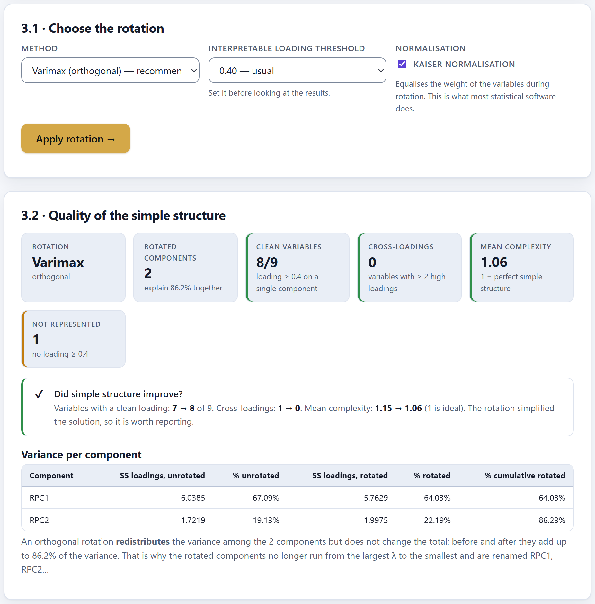
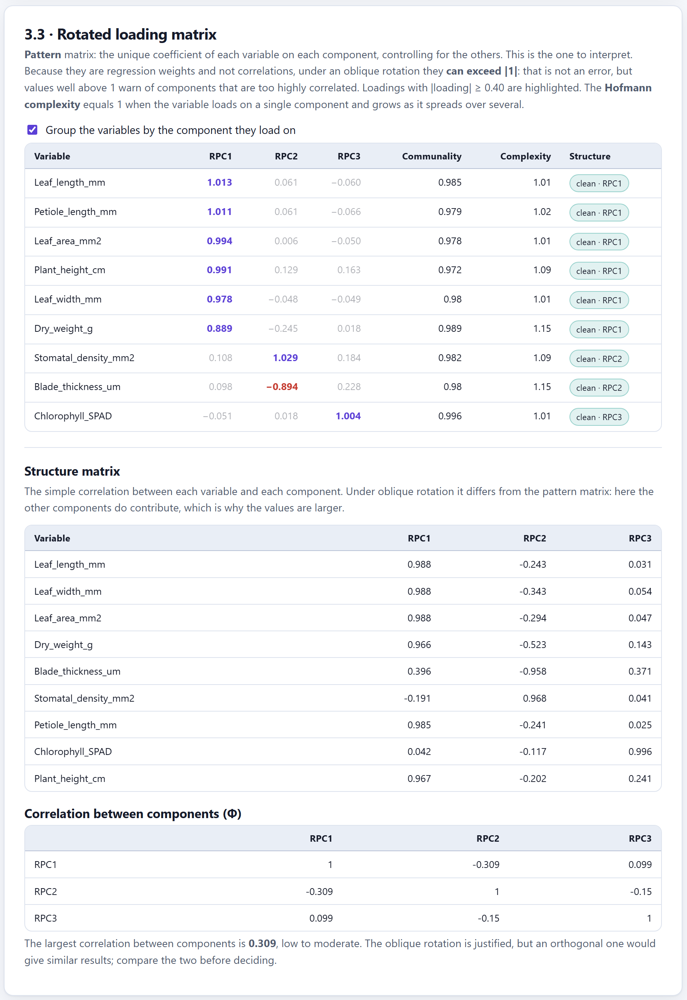
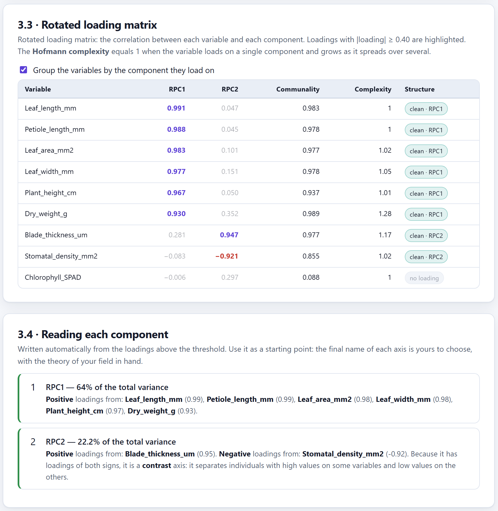
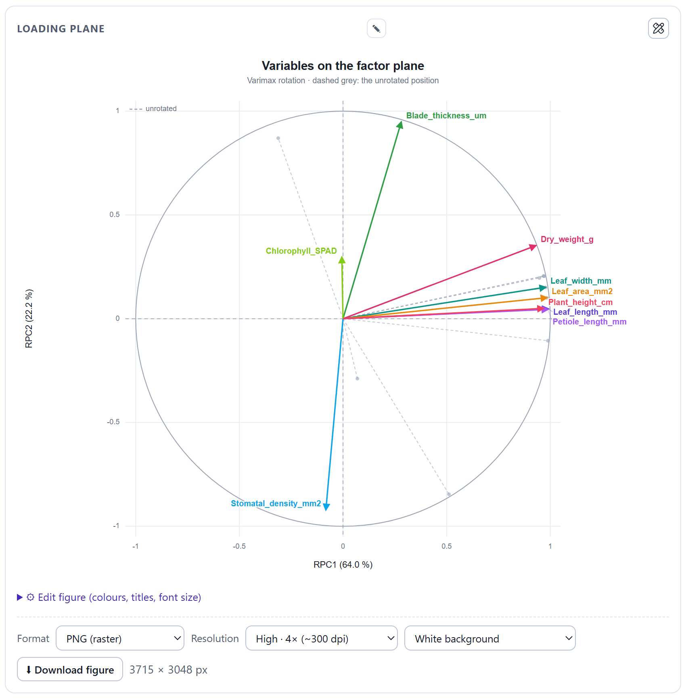

How to turn the retained components so that each one is defined by its own group of variables, which rotation to choose, how to read the pattern, structure and Φ matrices, and how to tell whether the rotation improved the solution. It applies to PCA only.
The components of Block 2 maximise variance, not clarity. What usually happens is that almost every variable loads strongly on PC1 and that the following axes are contrasts that are hard to name. Rotating looks for another orientation of those same axes in which each one has its own group of variables.
The k retained components define a subspace, and that subspace holds the same information whatever the orientation of the axes inside it. That is why rotating keeps the total variance of the k components and the communality of each variable, and changes how the variance is shared between axes, the individual loadings and the order: the rotated axes no longer run from largest to smallest λ and the app calls them RPC1, RPC2…
| If your aim is to… | then |
|---|---|
| Interpret and name the dimensions | Rotate. That is what rotation exists for. |
| Use the scores in another analysis (regression, clustering) | Probably not: the unrotated components are orthogonal and ordered, exactly what that analysis needs. |
| You have a single component retained | It cannot be done: the app asks for at least two and says so. |
| The unrotated solution is already simple | Rotate anyway to check; if it does not improve, report it unrotated (section 5.3). |
Rotating principal components is accepted practice —SPSS, SAS and psych::principal offer it— as long as it is stated. The theory card of the block includes the usual wording for the methods section.
Block 3 opens with the theory card, of six topics, and the 3.1 · Choose the rotation card. Pressing Apply rotation → shows the results and unlocks Block 4. With CA, MCA, FAMD and MFA the block stays dark: rotation belongs to PCA.
| Option | Values | Note |
|---|---|---|
| Method | Varimax (recommended), quartimax, equamax, parsimax, promax, direct oblimin, quartimin and Unrotated (for comparison). | When you change method a short description appears below. |
| Interpretable loading threshold | 0.30, 0.40 (usual), 0.50, 0.55 and 0.70. | Changing it recomputes the rotation at once (section 5.4). |
| δ (oblimin) | From −5 to 0.8; 0 by default. Only with direct oblimin. | Negative, more orthogonal axes; positive, more oblique. |
| κ (promax) | From 2 to 10; 4 by default. Only with promax. | Higher, more oblique. |
| Kaiser normalisation | A checkbox, ticked. It is hidden with Unrotated. | The same as SPSS and R's stats::varimax. |
The Unrotated (for comparison) option turns nothing: it shows the solution of Block 2 with the same indicators, for comparison, and it also unlocks Block 4. On the maps of Block 4 you decide afterwards which solution to draw; by default it is the unrotated one.

1 2 3 4 5 6 7 8 9The orthogonal ones keep the axes perpendicular: the components remain uncorrelated. The oblique ones allow them to correlate, which is usually more realistic in biology, where the dimensions —size, shape, physiology— are rarely independent.
| Rotation | Type | Parameter | What it does and when to use it |
|---|---|---|---|
| Varimax | orthogonal | γ = 1 | It simplifies columns: it pushes each loading towards 0 or ±1 within each component. The default option and the most widely reported. |
| Quartimax | orthogonal | γ = 0 | It simplifies rows: each variable on the fewest axes. It tends to leave a first general factor. |
| Equamax | orthogonal | γ = k/2 | A compromise between the two above; unstable with few variables. |
| Parsimax | orthogonal | γ = p(k−1)/(p+k−2) | It seeks maximum overall parsimony; rarely used. |
| Promax | oblique | κ = 4 | It starts from varimax and raises the loadings to the power κ to exaggerate the contrast. Fast; the preferred one with large samples. |
| Direct oblimin | oblique | δ = 0 | A general family; δ controls how much correlation is allowed. |
| Quartimin | oblique | δ = 0 fixed | The simplest oblique one: oblimin with δ = 0. |
| Aspect | What the app does |
|---|---|
| Algorithm | Jennrich's gradient projection (2001, 2002), the one in R's GPArotation, with up to 1500 iterations. If it does not converge, an amber warning suggests another rotation or reviewing nearly redundant variables. |
| Kaiser normalisation | It divides each row of loadings by the square root of its communality before rotating and restores it afterwards, so that poorly represented variables do not weigh less. |
| Sign | Each rotated component is oriented so that positive loadings predominate. The sign is arbitrary: an RPC may come out inverted with respect to the unrotated PC. |
| Order | The rotated components are ordered by their sum of squared loadings, from largest to smallest. |
With an oblique rotation an extra box appears on the 3.3 · Rotated loading matrix card, with the structure matrix and the correlation between components.
| Matrix | What it is | Use |
|---|---|---|
| Pattern | The unique coefficient of each variable on each component, controlling for the others. They are regression weights: they can exceed |1|. | The one that is interpreted and reported. It is the main table of card 3.3. |
| Structure | The simple variable–component correlation: pattern × Φ. It includes the effect of the other components. | Higher and less clean values; useful as a complement. |
| Φ | The correlation between the rotated components. | It says whether the obliquity was needed. |

1 2 3 4 5 6 7| Apply an oblique rotation first (promax) and look at the largest |Φ| off the diagonal. If it is… | then |
|---|---|
| below 0.15 | The axes came out almost orthogonal on their own: go back to varimax, which is more parsimonious. |
| between 0.15 and 0.32 | The oblique one is justified, but the orthogonal one will give almost the same: compare and choose the clearer. |
| 0.32 or more | The components share more than 10 % of variance: use the oblique one and interpret the pattern. |
These are the same cut-offs used by the automatic note under the Φ table. With the leaf morphometry the largest |Φ| is 0.244 with two components and 0.309 with three: the two rotations tell the same story.
In an oblique rotation the sums of squares of each component overlap, so they do not share out the variance. The Rotated components · they explain … together indicator and the last column of the Variance per component table add up those squares, and with oblique rotations that is not the joint variance: with promax and three components they show 98.5 %, more than the real 98.2 %, and with oblimin δ = 0.5 they reach an impossible 162.5 %. The joint variance of the components is always that of Block 2, because rotating does not change it. Report that one, and for each oblique component report its loadings, not a percentage.
The δ field accepts up to 0.8, but positive values force heavily correlated components. With the leaf morphometry, δ = 0.5 raised the largest |Φ| from 0.18 (with δ = −1) to 0.67 and a cross-loading appeared. Leave δ = 0 unless you have a theoretical reason to change it.
The aim of rotating is Thurstone's simple structure: that each variable loads strongly on one component and hardly at all on the others, and that each component has its own group of variables. The 3.2 · Quality of the simple structure card measures how close you are.
| Indicator | What it counts | Colour |
|---|---|---|
| Rotation | The method and whether it is orthogonal or oblique. | — |
| Rotated components | How many were rotated and the sum of their squared loadings (see the warning in section 5.2). | — |
| Clean variables | They exceed the threshold on a single component. | green ≥ 75 % · amber ≥ 50 % · red |
| Cross-loadings | They exceed the threshold on two or more components. | green 0 · amber 1 or 2 · red |
| Mean complexity | The mean of the Hofmann complexity: 1 if each variable loads on a single axis, up to k if it is shared out equally. | green < 1.3 · amber < 1.8 · red |
| Not represented | No loading reaches the threshold. | green 0 · amber |
Below, the Did the simple structure improve? box compares the clean variables, the cross-loadings and the mean complexity before and after rotating, with the same threshold. It passes the rotation, in green, if the clean variables increase or the mean complexity falls; if not, in amber, it suggests another method or reporting the unrotated solution.
| Column | Contents |
|---|---|
| RPC1, RPC2… | Rotated loadings (pattern, if the rotation is oblique); highlighted if they exceed the threshold. |
| Communality | The same as before rotating. With oblique rotations it is computed with Φ. |
| Complexity | Hofmann complexity of the variable. |
| Structure | clean · RPCj, cross-loading or no loading. |
Card 3.4 writes out, for each rotated component, its percentage and the variables that exceed the threshold, separated into positive and negative. It adds two remarks: if there are loadings of both signs, it calls it a contrast axis; if only one variable exceeds the threshold, it marks it in amber as fragile, because a component usually needs at least three marker variables. The name of the axis is for you to give.

1 2 3 4 5 6| Figure | What it shows | Options of its own |
|---|---|---|
| Heat map of the loading matrix | Variables × components on a colour scale, with the values. | Continuous palette, group by component, hide below the threshold. |
| Loading plane | The variables as vectors on two rotated components, with their unrotated position in dashed grey. | Axes, colour by variable or by cos², inner circle, join with a line. |
| Loadings per component | Bars per component with the threshold line. | Columns, sort by magnitude, positive and negative colours. |
| Variance before and after rotating | The sum of squared loadings of each component, unrotated and rotated. | Colours, values, outline. |

1 2 3 4 5 6| Button | Contents |
|---|---|
| ⬇ Rotated loadings (CSV) | Loadings (or pattern), communality, complexity and type of structure of each variable. |
| ⬇ Structure matrix (CSV) | Variable–component correlations; equal to the loadings if the rotation is orthogonal. |
| ⬇ Correlation between components (CSV) | The Φ matrix; the identity if the rotation is orthogonal. |
| ⬇ Rotated scores (CSV) | Scores of each individual on the rotated components, by Thurstone's regression method on the standardised variables, together with the qualitative variables. |
The Go to the factor maps → button leads to Block 4.
A loading is only interpreted if it exceeds the threshold. The threshold does not change the rotation —the loadings are the same—, but it decides which variables count as clean, cross-loading or without loading, what is highlighted in the tables and figures and what the automatic reading writes.
| Threshold | Label in the app | Shared variance | When |
|---|---|---|---|
| 0.30 | minimum | 9 % | Large samples (n ≥ 300) or exploratory analysis. |
| 0.40 | usual | 16 % | The default value; samples of 100 to 300. |
| 0.50 | practically significant | 25 % | When you want only substantive relationships. |
| 0.55 | small samples | 30 % | n < 100, as the size recommendation of Block 1 asks. |
| 0.70 | very demanding | 49 % | Very clean summaries; it can leave components with no markers. |
Changing the threshold on card 3.1 recomputes at once, and it also changes the “before” column of the comparison with the unrotated solution, which is evaluated with the same threshold. Table 5.10 shows this with the leaf morphometry, three components and varimax.
| Threshold | Clean unrotated → rotated | Cross-loading unrotated → rotated | What happens |
|---|---|---|---|
| 0.30 | 7 → 8 | 2 → 1 | Dry_weight_g is left cross-loading: 0.922 on RPC1 and 0.369 on RPC2. |
| 0.40 | 8 → 9 | 1 → 0 | All clean after rotating. |
| 0.55 | 9 → 9 | 0 → 0 | The comparison no longer tells them apart; only the complexity falls (1.21 → 1.10). |
The threshold is decided by the sample size and stated in the methods. Raising or lowering it until the table “looks right” is a form of overfitting: with the data of table 5.10, going from 0.30 to 0.40 makes a real cross-loading of 0.369 disappear. If a variable ends up close to the threshold, report it with its value.
The simulated example of the app —Simulated example: leaf morphometry (120 × 9) on card 1.1— has nine leaf and plant measurements and one qualitative variable, the site. It is a typical case for rotating: one enormous size axis and other, finer ones. The figures are the ones from the app.
Reading. The two-component solution with varimax is the one to report: two axes with a name and no cross-loadings. The third component that Kaiser and the MAP asked for is not a dimension but the variance of the chlorophyll itself, which is unrelated to the shape of the leaf; it is declared as a variable with no common structure. The rotation did not create the groups: it made them visible. The unrotated PC2 already held the thickness–stomata contrast, but mixed with size.
“A PCA was carried out on the correlation matrix of nine variables (n = 117). Two components were retained, explaining 86.2 % of the variance, on the basis of the parallel analysis and the scree plot. A varimax rotation with Kaiser normalisation was applied and the loadings were interpreted at |a| ≥ 0.40. The first rotated component (64.0 %) gathered the size measurements and the second (22.2 %) contrasted blade thickness with stomatal density. Chlorophyll content loaded on neither (communality 0.09). A promax rotation gave the same structure, with a correlation between components of 0.24.”
With the rotated solution in hand, the next chapter enters Block 4: the factor maps of variables and individuals.